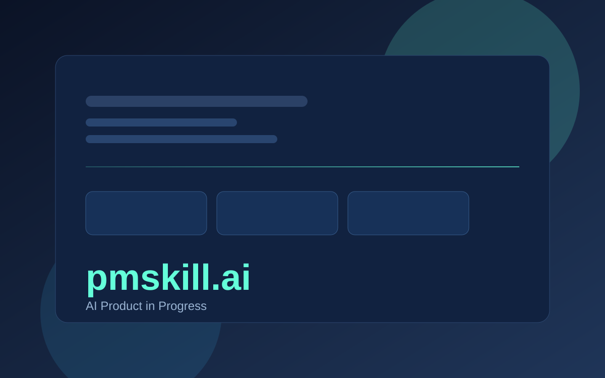
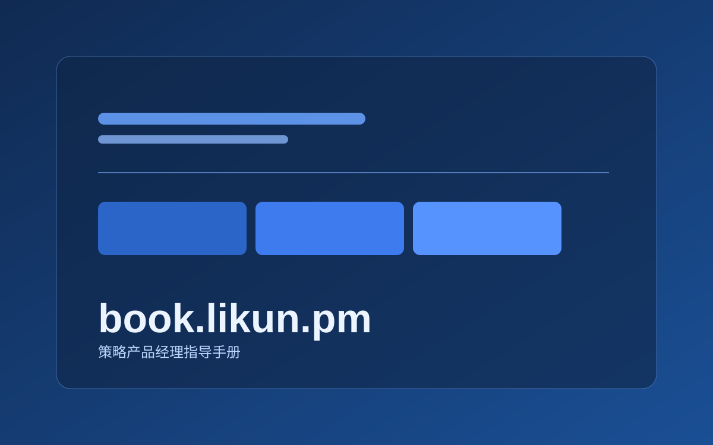
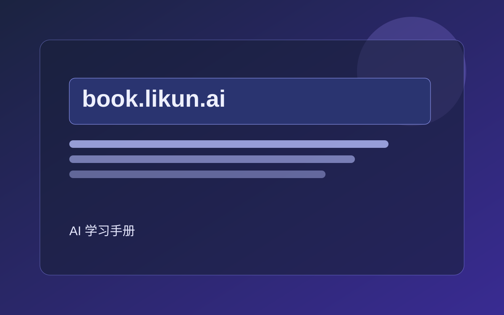
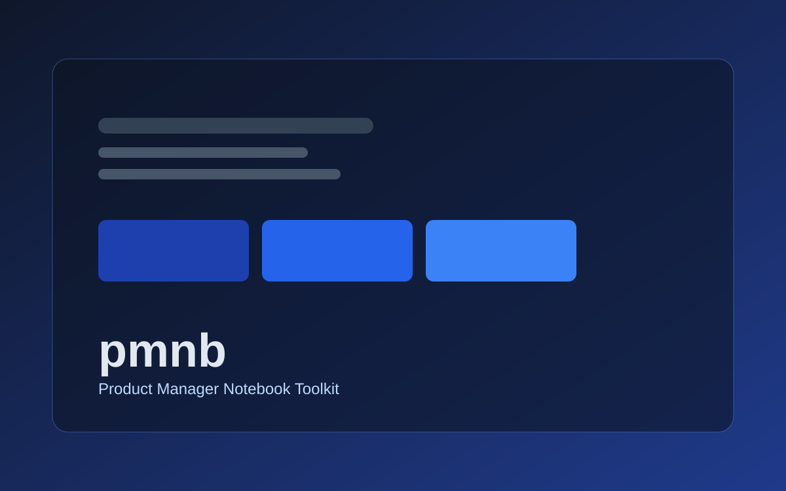
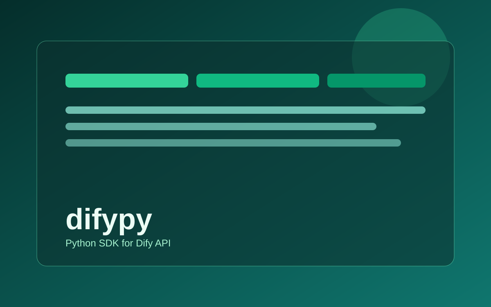
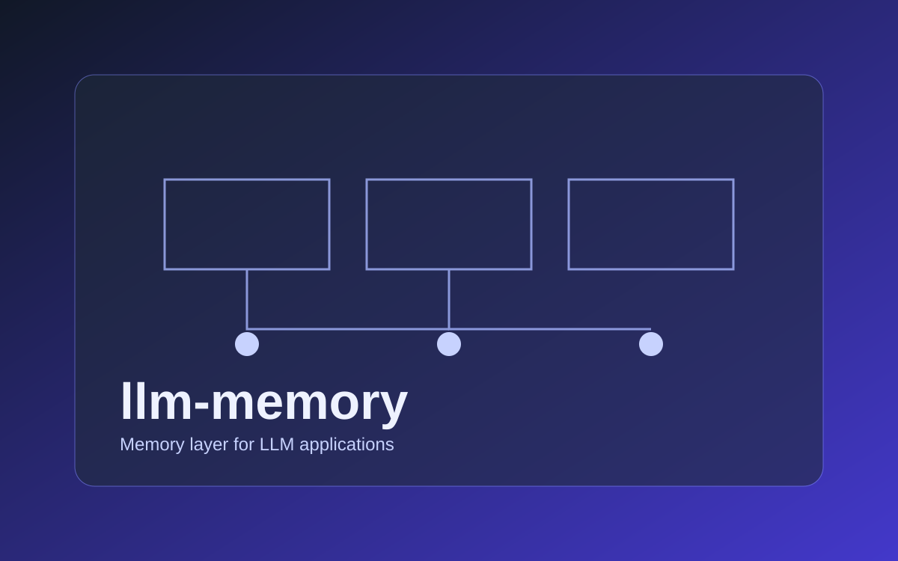
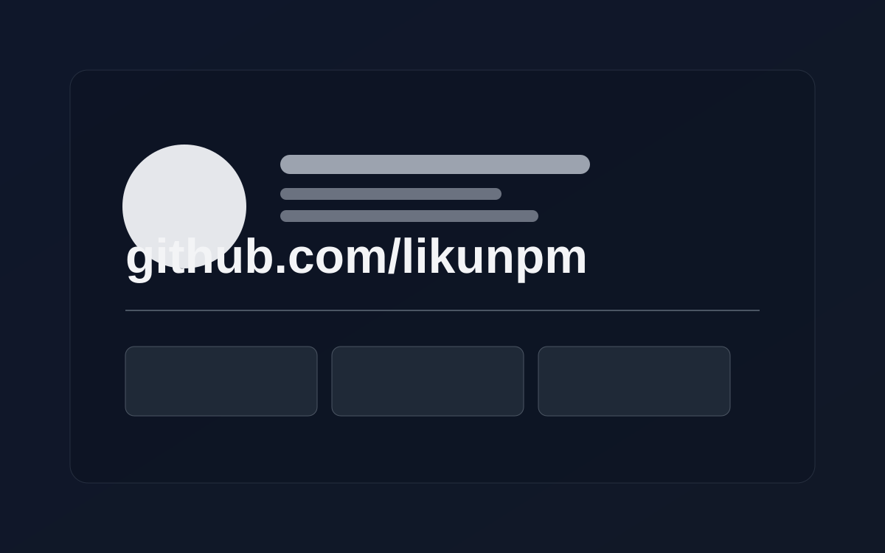
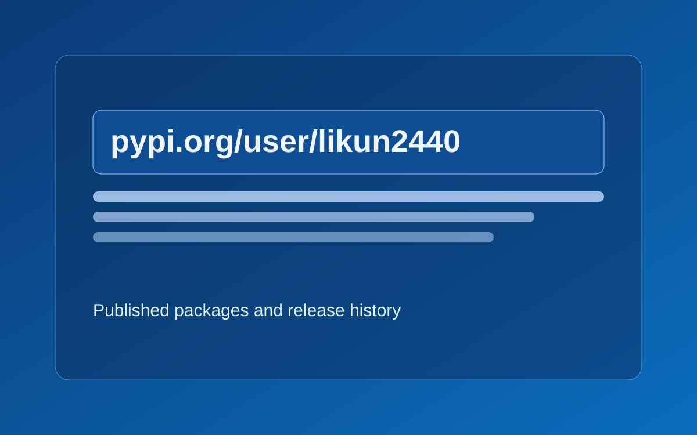

2024.02 - 至今
Keep · 策略产品总监
负责Keepace.ai 大模型，卡卡Agent教练，搜索推荐分发等。
个人研究方向：模型算法、Agent架构、家庭智能系统、策略产品培养
团队方向：运动AI算法、大模型训练、Agent研发、搜索推荐分发策略、内容理解与社区产品。
2024.02 - 至今
负责Keepace.ai 大模型，卡卡Agent教练，搜索推荐分发等。
2020.02 - 2024.02
负责 AI 在 QQ 内整体落地，建设大模型能力与评估体系，并在小世界/看点等业务中推进内容策略、推荐分发、热点体系与增长留存优化。
2019.09 - 2020.02
负责海外短视频产品 Noizz产品和运营团队管理，负责产品迭代、商业化营收、内容消费、用户增长。
2019.03 - 2019.09
负责主推荐与短视频推荐体系，优化相关性、多目标排序与新户冷启动策略。
2017.08 - 2019.03
负责热门微博推荐算法与垂直频道推荐优化，推动召回与排序架构升级。
2016.03 - 2017.04
探索今日头条社交化与社区产品形态，负责用户关系体系、UGC 内容生产分发与评论互动策略。
2013.11 - 2017.08
负责评价系统、消息系统、社区评论、平台模板与流量增长相关产品，持续推进平台化能力建设。

每日进步，iOS/Mac客户端。

策略产品经理指导手册。

AI学习手册

一个面向产品经理日常工作的工具包，包括各种数值计算工具

Dify API 的 Python SDK，方便进行应用集成。

面向大语言模型应用的记忆管理系统。

GitHub 主页与开源项目入口。

PyPI 账号主页与已发布包列表。